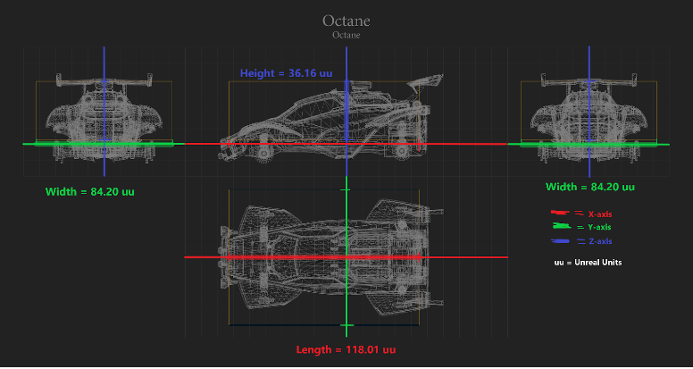

Leírás:
Az Octane egy jármű karosszéria, amelyet a játék kiadásával együtt 2015. július 7-én adtak ki. Eredetileg a Rocket League előzetesében, a Supersonic Acrobatic Rocket-Powered Battle-Car-ban jelent meg.
Az oktán "common" ritkaság kategóriába tartozik.
Hitbox:
